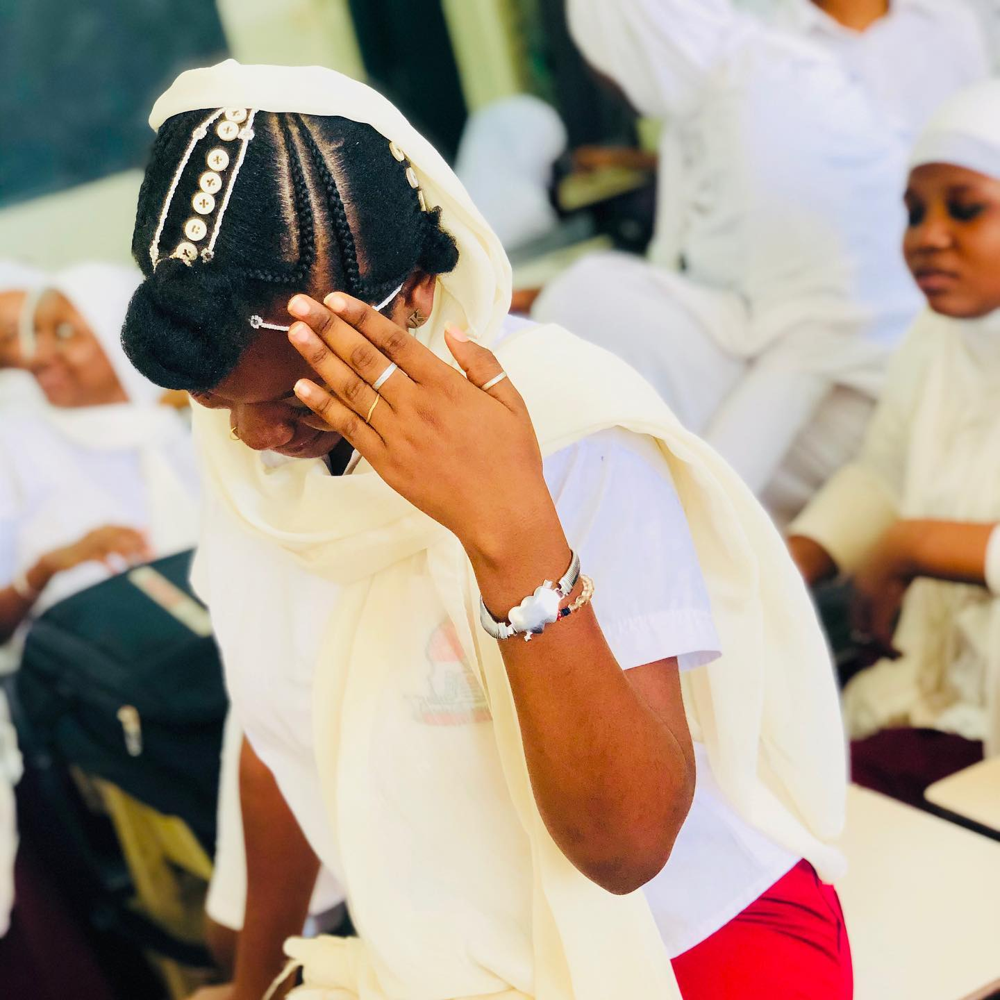

cette page est dedier a une fille qui compte beaucoup pour moi
RAYA cette page est faite pour t 'avouer mes sentiments. Oh ma raya je ne sais pas si tu le savais mais il se trouve que je suis amoureux de toi depuis le primaire,c'est vrai qu'au primaire faut avouer que je savais pas ce qu'etait l'amour mais maintenant je sais la nature de mes sentiments à ton egard.C'est vrai qu'au primaire on c'etait separer mais je n'est pas arreter de penser à toi durant tout ce temps.au lycée quand j'etait venu au mariama j'esperais renouer une relation avec toi mais j'en ai pas eu le moment malheureusement.tu ne sais pas a quel ca m'a fait plaisir d'obtenir ton numero et en plus j'ai meme eu l'occasion de parler avec toi pour la premiere fois et d'entendre par la meme occasion ta magnifique voix pour la premiere fois de ma vie.il etait temps que je me decharge du poids de cet amour que je ressentspour toi depuis le cm2. tu as creer de la magie dans mon esprit et dans mon coeur sans faire aucun truc.Tu es et tu seras à jamais la plus belle fille à mes yeux,celle qui occuppe tous mes esprits et fait battre mon coeur à chaque instant de ma vie.
You Belong To Me (Tu M'appartiens) Voit les pyramides le log du Nil Observe le soleil se lever de l'ile tropicale Rappelle toi juste chérie tous les moment Tu m'appartiens Voit le marché dans le vieil Alger Envoie-moi des photos et des souvenirs Rappelle toi juste quand le reve apparait Tu m'appartiens Et je serais si seul sans toi Peut-etre tu te sentiras seule aussi survole l'ocean dans un avion d'argent Voit la jungle quand elle est mouillée par la pluie Rappelle toi juste quand tu es encore à la maison Tu m'appartiens Oh je serais si seule sans toi Peut-etre que tu te sentiras seule aussi survole l'ocean dans un avion d'argent Voit la jungle quand elle est mouillée par la pluie Rappelle toi juste quand tu est encore à la maison Tu m'appartiens. 
Oh-ooh-whoa-oh-oh-oh-oh Oh-ooh-whoa-oh-oh-oh-oh Oh-ooh-whoa-oh, oh-oh-oh-oh You know you love me (yo), I know you care (uh-huh) Just shout whenever (yo), and I'll be there (uh-huh) You are my love (yo), you are my heart (uh-huh) And we will never, ever, ever be apart (yo, uh-huh) Are we an item? (Yo) girl, quit playin' (uh-huh) "We're just friends" (yo), what are you sayin'? (Uh-huh) Said, "There's another" (yo), and looked right in my eyes (uh-huh) My first love broke my heart for the first time, and I was like (yo, uh-huh) "Baby, baby, baby, oh" Like, "Baby, baby, baby, no" Like, "Baby, baby, baby, oh" I thought you'd always be mine, mine "Baby, baby, baby, oh" Like, "Baby, baby, baby, no" Like, "Baby, baby, baby, oh" I thought you'd always be mine, mine Oh, for you, I would've done whatever (uh-huh) And I just can't believe we ain't together (yo, uh-huh) And I wanna play it cool (yo), but I'm losin' you (uh-huh) I'll buy you anything (yo), I'll buy you any ring (uh-huh) And I'm in pieces (yo), baby, fix me (uh-huh) And just shake me 'til you wake me from this bad dream (yo, uh-huh) I'm goin' down (oh), down, down, down (uh-huh) And I just can't believe, my first love won't be around, and I'm like "Baby, baby, baby, oh" Like, "Baby, baby, baby, no" Like, "Baby, baby, baby, oh" I thought you'd always be mine, mine "Baby, baby, baby, oh" Like, "Baby, baby, baby, no" Like, "Baby, baby, baby, oh" I thought you'd always be mine, mine (Luda!) When I was 13, I had my first love There was nobody that compared to my baby And nobody came between us, nor could ever come above She had me goin' crazy Oh, I was starstruck She woke me up daily Don't need no Starbucks (woo) She made my heart pound And skip a beat when I see her in the street and At school on the playground But I really wanna see her on the weekend She knows she got me dazin' 'Cause she was so amazin' And now, my heart is breakin' But I just keep on sayin' "Baby, baby, baby, oh" Like, "Baby, baby, baby, no" Like, "Baby, baby, baby, oh" I thought you'd always be mine, mine "Baby, baby, baby, oh" Like, "Baby, baby, baby, no" Like, "Baby, baby, baby, oh" I thought you'd always be mine, mine I'm gone (yeah, yeah, yeah, yeah, yeah, yeah) Now, I'm all gone (yeah, yeah, yeah, yeah, yeah, yeah) Now, I'm all gone (yeah, yeah, yeah, yeah, yeah, yeah) Now, I'm all gone (gone, gone, gone) I'm gone
bon retour a la realiter .RAYA j'en doute bien que tu ne ressents pas les memes sentiments que moi.mais c'est la vie on peut pas obtenir tout les personnes qu'ont veut mais dit on peut quand meme rester amis.je te pris de me pardonner d'avoir fait cette page web ci ca te derange.n'empeche sache que je t'aime et ce jusqu'a la fin de ma vie.tu resteras à jamais dans mon coeur ma belle.